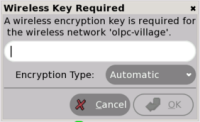

Getting Connected
A primary goal of the Sugar learning platform is enabling students to learn and work together.
In a wireless environment, an access point (AP) is a device that allows your computer to connect to an existing set of communicating devices. The access point usually has a direct connection to the internet, and can relay data between the wireless devices and the devices it can access.
Multiple ways to connect to others
- wireless access point (WiFi hotspot);
- wired network—may require an external adapter;
- OLPC “School Server” mesh network;
- OLPC “simple” mesh network, which lets you collaborate directly with other Sugar users.
Connecting through an access point
You can connect from the Neighborhood View. You can see information about the connection on the Frame.
Step 1: Go to the Neighborhood View

Go to the Neighborhood View to connect to an access point.
Tip: To access the Neighborhood View, click on the Neighborhood Icon on the Frame or by pressing the F1 key.
Step 2: Choose an access point

Networks (access points) are represented by circles on the Neighborhood View. Hover over a circle to see more information about an access point. An access point is identified by the name (ESSID) it broadcasts. An OLPC laptop mesh-point—represented by a series of concentric circles—is identified by its channel number (1, 6, or 11). You can also search for an access point by name in the search bar at the top of the page.
Note: If an access point is not broadcasting its name, the Neighborhood View may show that AP with some other name.
Signal strength is indicated by the fill level of the circle. The color of the circle is based upon the name of the access point. A lock icon identifies networks that are secured and require a key (passcode) to use. A star icon identifies access points that have been previously used (favorites).
Step 3: Activate a connection
To activate a network connection, click once inside the circle that corresponds to your chosen access point (or click on the Connect option in the hover menu).
While the connection is being established, the inside of the circle will blink. Once the connection is established, an icon for that connection will be shown on the bottom edge of Frame. If for some reason the connection failed, the circle will stop blinking. Sometimes it is necessary to try several times before the connection is established.
If the access point is secured and requires a key, a dialog prompts you for the required information. Different access points may require different types of keys. Before entering the key, be sure to select the correct type from the pull-down menu that is presented.
Step 4: Checking the connection

The connection status is detailed in a hover menu.

You can check the status of your connection from the Frame (from any view). By hovering over the circle icon, you will find details about your connection status in a hover menu.
OLPC deployments
OLPC has designed a mesh network that allows XO laptops to communicate without the presence of the Internet and a School Server as a means to make their school network connectivity more efficient. The School Server also provides web and chat services.
Note to parents and teachers
Collaboration between learners is one of the most important features of Sugar. To enable collaboration in a classroom or home setting, it is necessary to establish the same type of connection for each computer. Computers can be connected through a School Server, a simple mesh if they are OLPC XOs, or an access point.
When using an access point for the connection, the computers must all use the same Jabber server in order to collaborate. Please refer to the Sugar Control Panel discussion in the Personalizing Sugar chapter for details regarding the configuration of Jabber.
Additional hints
| You make your connection from the Neighborhood View. | |
 |
Your current connection status is shown on the Frame. Also, the hover menu will indicate "Connected". It sometimes takes 2–3 tries to connect. To disconnect, select “Disconnect” from the hover menu that appears in either of the network status menus (See Step 4 above). |
| Access points are represented by circles. The fill level indicates signal strength. | |
| Access points that require keys have a lock icon. The color of the circle is calculated from the ESSID of the access point. The name of the access point is displayed when you hover over it. | |
| You connect by “clicking” in the center of the circle. The center of the circle will blink while the laptop is trying to connect. | |
| If you are using an OLPC XO computer, mesh points are represented by a series of concentric circles. The color of a mesh point is the same as your XO color. If your OLPC XO computer is “mesh enabled” and you have not connected to an AP, you will automatically be joined to a simple mesh network, enabling you to collaborate with others in the mesh, but not necessarily to access the Internet. | |
|  | You are prompted if the access point requires a key. |
Author : ConnectingNetwork
© Walter Bender 2008
Modifications:
adam hyde 2008
David Cramer 2008
David Farning 2008
Janis Grinbergs 2008
License : General Public License
Produced in FLOSS Manuals (http://www.flossmanuals.net)